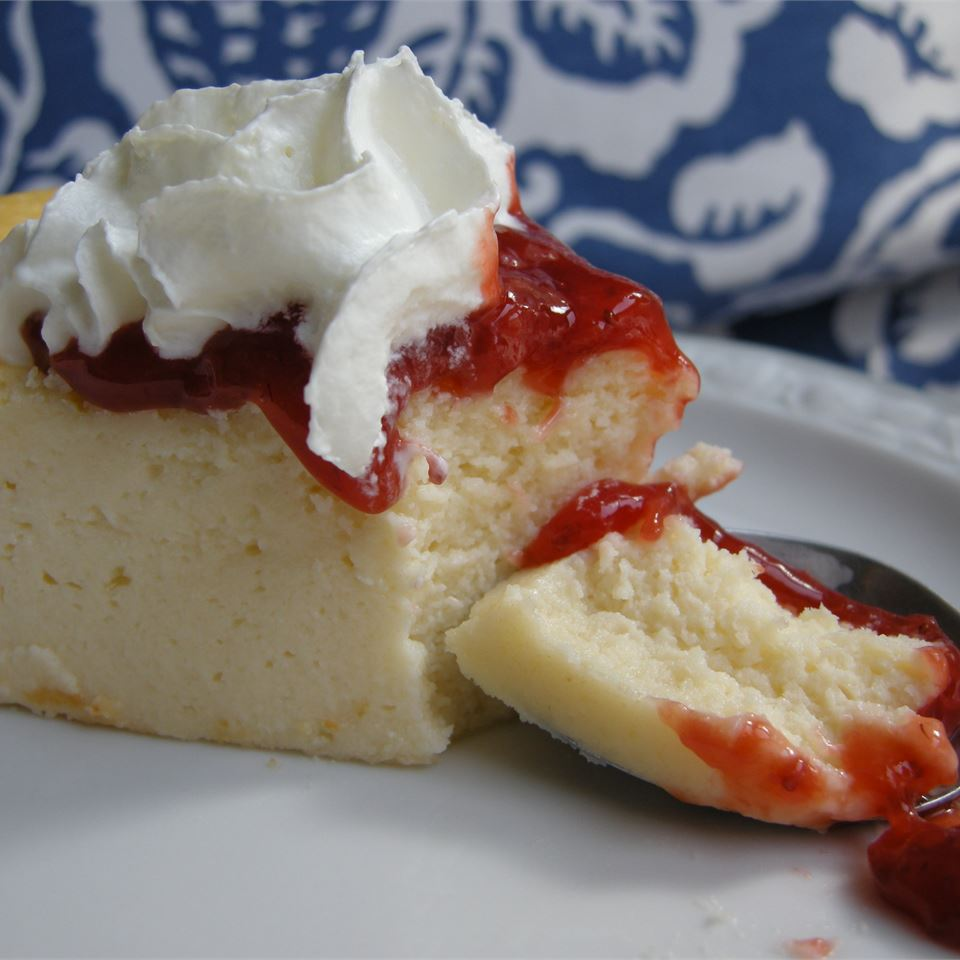

Italian Cream Cheese and Ricotta Cheesecake

Description
This is my grandmother's cheesecake recipe passed down to my entire family. It's the best. I can't believe I'm sharing it, but everyone needs to know how to make an authentic Italian cheesecake. It is creamy and not thick, which is why our family LOVES it! For best results, do NOT substitute any ingredients with low-fat unless you've made it before and want to experiment.
Ingredients
- 2 (8 ounce) packages cream cheese, softened
- 1 (16 ounce) container ricotta cheese
- 1 1/2 cups white sugar
- 4 eggs
- 1 tablespoon lemon juice
- 1 teaspoon vanilla extract
- 3 tablespoons cornstarch
- 3 tablespoons flour
- 1/2 cup butter, melted and cooled
- 1 pint sour cream
Steps
- Preheat oven to 350 degrees F (175 degrees C). Lightly grease a 9-inch springform pan.
- Mix the cream cheese and ricotta cheese together in a mixing bowl until well combined. Stir in the sugar, eggs, lemon juice, vanilla, cornstarch, flour, and butter. Add the sour cream last and stir. Pour the mixture into the prepared springform pan.
- Bake in the preheated oven 1 hour; turn oven off and leave in oven 1 hour more. Allow to cool completely in refrigerator before serving.